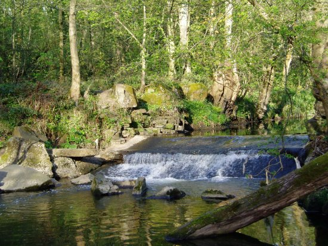
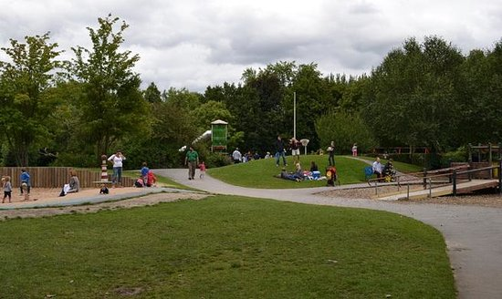
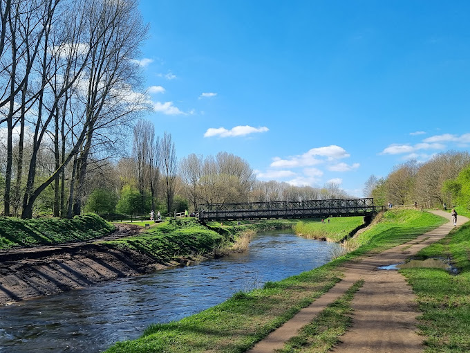
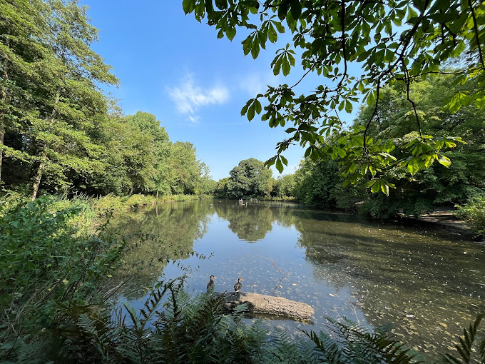

Parks in and around Manchester

This is Bramhall park, it is owned by Stockport Metropolitan Borough Council. It was built around the end of the 14th century.

This is Bruntood park, it was built in 1861 as the home of stuff merchant John Douglas. it was named bruntwood after his wifes scottish roots. The park has long been open to the public and has many paths and open areas as well as beautiful mature trees. In all there are 120 acres of mature parkland. It includes a children's play area and a bike/BMX park. The Hall is now a hotel and the original Victorian conservatory had been converted to a restaurant.

This is Chorlton Water Park, it is a Local Nature Reserve and stands on the site of Barlow Hall Farm. During the construction of the M60 motorway in the 1970s gravel was excavated from the site. The gravel pit was subsequently flooded creating the lake that is central to the Water Park today.

This is Abney Hall, which is a Victorian house surrounded by a park in Cheadle. It was built in 1847.